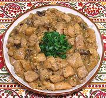
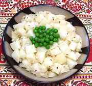

Chicken Fricassee

Beef & Barley Soup
Legume Soup
Potato Cones
Pickled Sausages
Prague Salad
Potato Salad

Cauliflower Salad

Beet Salad
All the recipes on this page are from Czech cookbooks published between
1960 and 1986,
except the pickled sausages which are from various current Internet
sources.
|

Chicken Fricassee |
Beef & Barley Soup |
Legume Soup |
|
Potato Cones |
Pickled Sausages |
Prague Salad |
|

Potato Salad |
Cauliflower Salad |
Beet Salad |